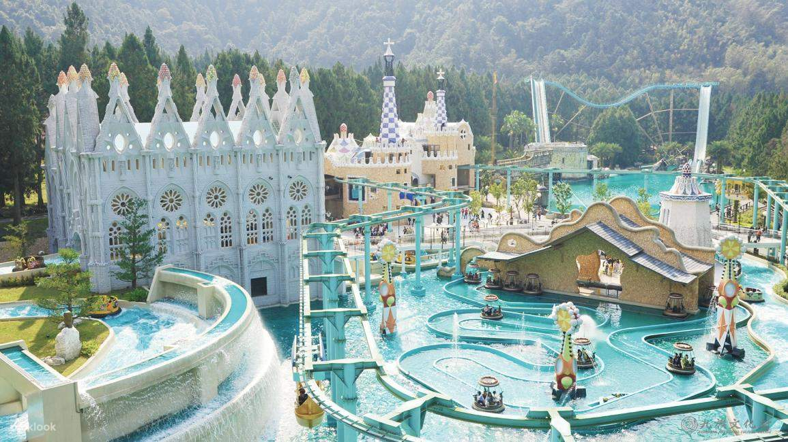
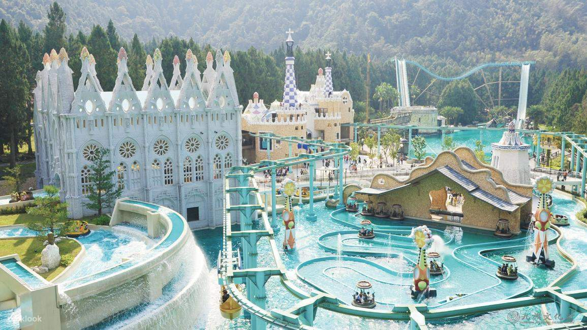

景點介紹
位於南投縣魚池鄉大林村金天巷45號的九族文化村，係由水沙連歐洲花園、歡樂世界與原住民部落景觀區三大部份組成，佔地62公頃，最高海拔900公尺。擁有臺灣遊樂園8大最─臺灣最高的自由落體、最大的歐洲花園、海拔最高、樹最多、原住民文化最豐富。想在綠樹如蔭的山林間，欣賞原住民文化、體驗超刺激與快感的遊樂設施，或者只是看場秀、品嘗原味餐等，歡迎全家來體驗臺灣遊樂園最High的玩法。
位於南投縣魚池鄉大林村金天巷45號的九族文化村，係由水沙連歐洲花園、歡樂世界與原住民部落景觀區三大部份組成，佔地62公頃，最高海拔900公尺。擁有臺灣遊樂園8大最─臺灣最高的自由落體、最大的歐洲花園、海拔最高、樹最多、原住民文化最豐富。想在綠樹如蔭的山林間，欣賞原住民文化、體驗超刺激與快感的遊樂設施，或者只是看場秀、品嘗原味餐等，歡迎全家來體驗臺灣遊樂園最High的玩法。
